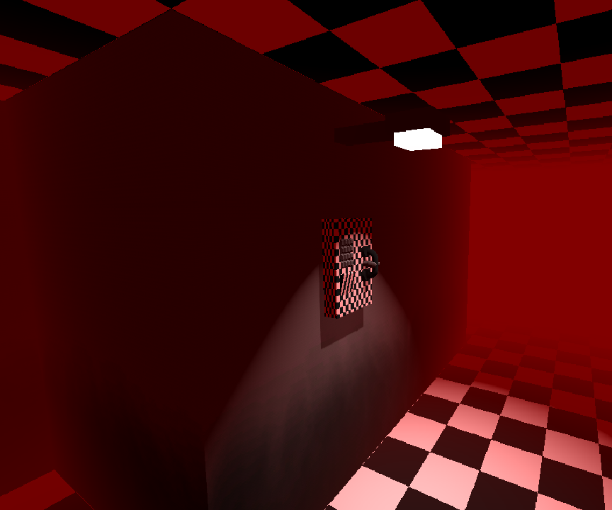
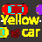
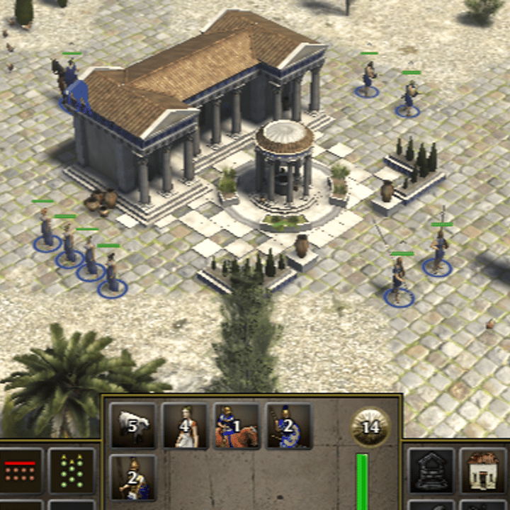
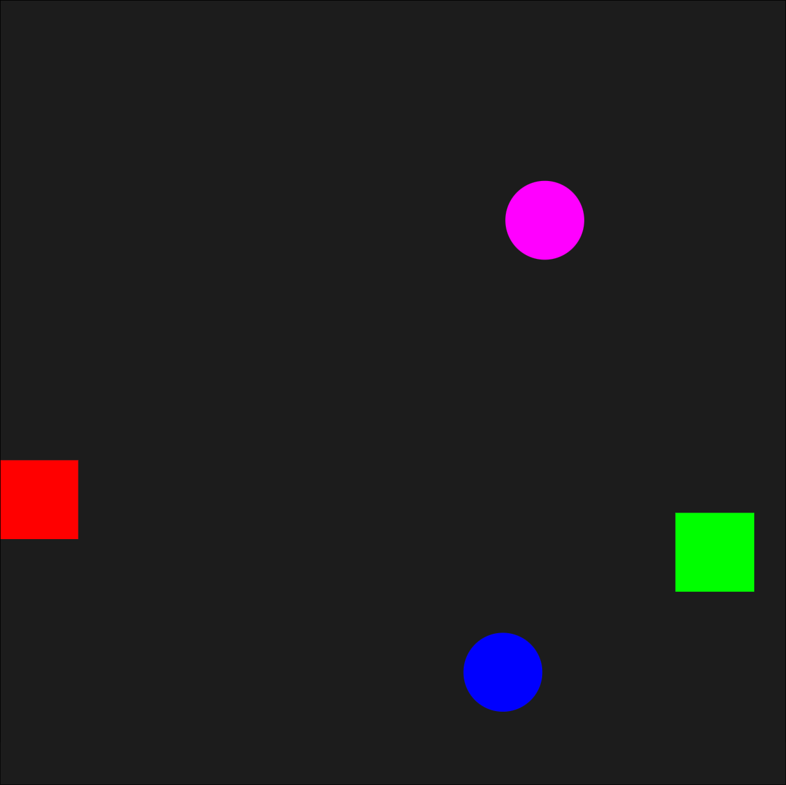

Paczek
I'm a programmer mostly interested in gamedev, though over the years I have tried fullstack web development, modding, mobile app development and plenty other things. I try to make all art for my projects (including music) myself with varying levels of success.
paczek1024@proton.me
Itch.io
YouTube
GitHub
I use Arch BTW

Quandary
A 3D puzzle game prototype made in Godot with eerie visuals, music and sound effects. I created all the code, music, sfx, textures, models and shaders

Yellow Car
A 2D same-screen multiplayer game made in Godot with carefully assembled ambient VFX and SFX, with all assets and code made by me.
 Steam
Steam
Yavalanche Demo
A tower defense game demo made with the Unity Engine and published on Steam. I was responsible for development and/or maintenance of most gameplay systems. Some of the highlights are:
- SteamSDK integration
- Advanced SFX system that limits the number of sounds playing and introduces delays to make cluttered scenes sound better
- Infinite, deterministic wave generation system that picks enemy counts and types based on assigned difficulty values, current wave count and game difficulty settings
- Random "natural disaster" events and player upgrades that increase variety
Godot Engine Fork
A fork of the Godot Engine adjusted to suit my games better. Some of the changes include:
- A utility node for decoding GIF images into usable frames (6c7c8db)
- A new StyleBox type that can merge 2 different StyleBoxFlat instances (131e364)
- A new theme property that can change the font size and icon on buttons when pressed (36d5713, dc83dec)
- Changes to the GDScript parser to discourage problematic syntax (67aadb2, 060becb)
- A single float value constructor for all vector types (a6014a9)
- An option to shorten the text in inactive tabs of TabContainer (49637ac, 739ced2)
- A project setting that can disable the focus mechanic on UI elements (4d4b81b)
- Changes to the Scons build system settings to avoid some gcc crashes on older engine versions (1bbf916)
- Default values for class properties that are more intuitive or match the documentation (10176c0, c837b2f)
0 A. D.
I contributed two commits to the open source game 0 A. D.
- Moved the exposedFunctions variable to the GuiInterface class to allow modification without fully overriding it, increasing mod compatibility (55e948d68b)
- Ported a patch that increases maximum selection size from the old issue tracker (a11b2cc500)

Unity DOTS Test
Two multiplayer projects in Unity DOTS and Netcode for Entities, both made as a part of a technical assessment task. One focuses on animations via Game object - ECS integration and the other on pure DOTS and code quality.
Godot WebRTC Demo
An example WebRTC implementation in the Godot Engine with a NodeJS backend that uses WebSockets. Created as a base for my future projects.

Select All
A mod for the game 0 A. D. which improves unit selection. It can filter units based on various criteria and has custom keybind support.

Pong JS
A pong game based on my custom collision simulation made in JS without using any existing algorithms.
Game Repository
Game Showcase
Simulation Repository
Simulation Showcase